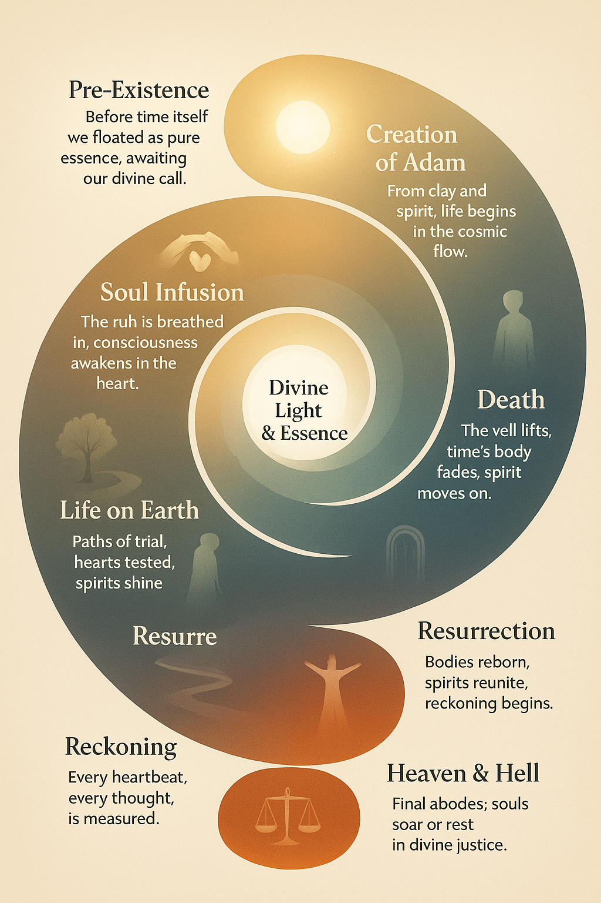

From Creation to Today
This spiral timeline visualizes the journey of existence—from the origin of life, the rise of civilizations, to pivotal events shaping humanity. Each point carries a poetic caption to guide understanding and reflection.
The Spiral Timeline

Example Captions (bite-sized for social media / web):
1. "In the beginning, the pure essence unfolds."
2. "Stars and planets dance to divine rhythm."
3. "Life emerges, hearts awaken, consciousness begins."
4. "Civilizations rise, knowledge flows, wisdom spreads."
5. "Prophets guide, stories inspire, humanity learns."
6. "Time cycles, lessons echo, the future awaits."
1. "In the beginning, the pure essence unfolds."
2. "Stars and planets dance to divine rhythm."
3. "Life emerges, hearts awaken, consciousness begins."
4. "Civilizations rise, knowledge flows, wisdom spreads."
5. "Prophets guide, stories inspire, humanity learns."
6. "Time cycles, lessons echo, the future awaits."
Where to Explore Next
Understanding this journey sets the foundation for seeing the hidden patterns in physics, consciousness, and energy. Next, explore the Physics Proof-of-Concepts page to witness how these ideas manifest in measurable reality.
Explore Physics Proofs